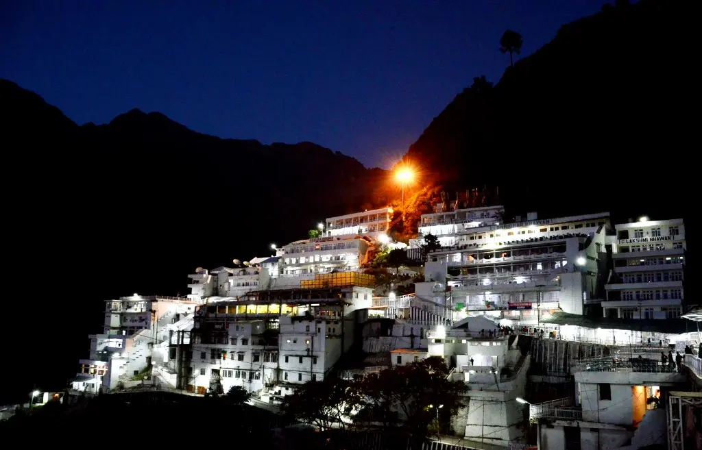
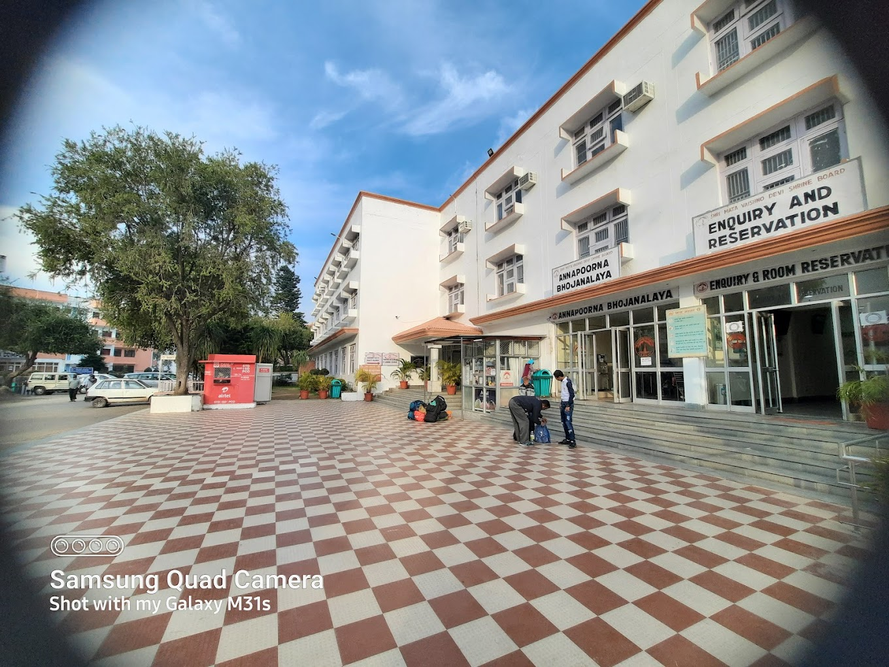
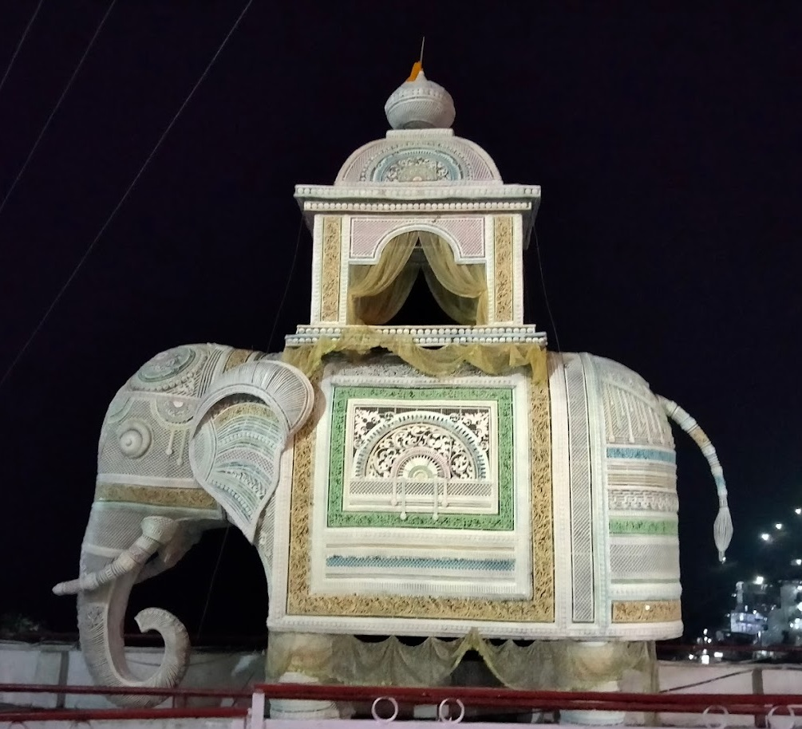
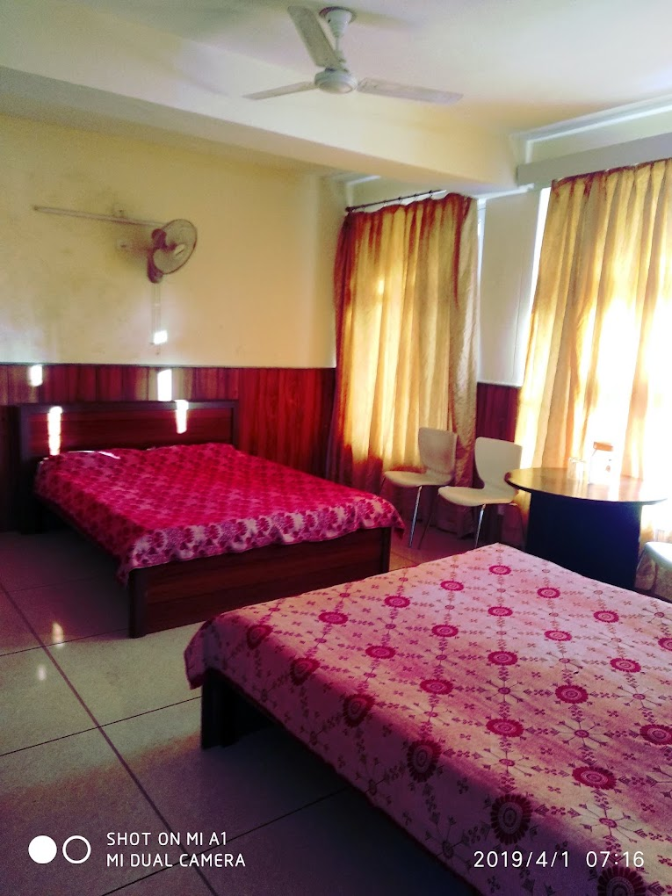
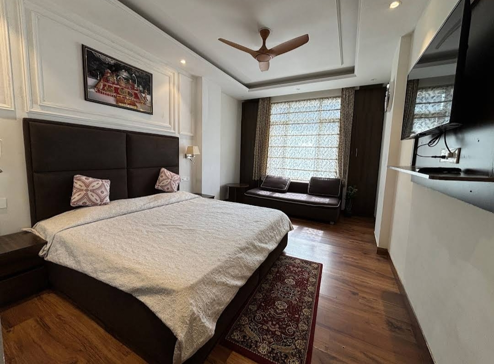
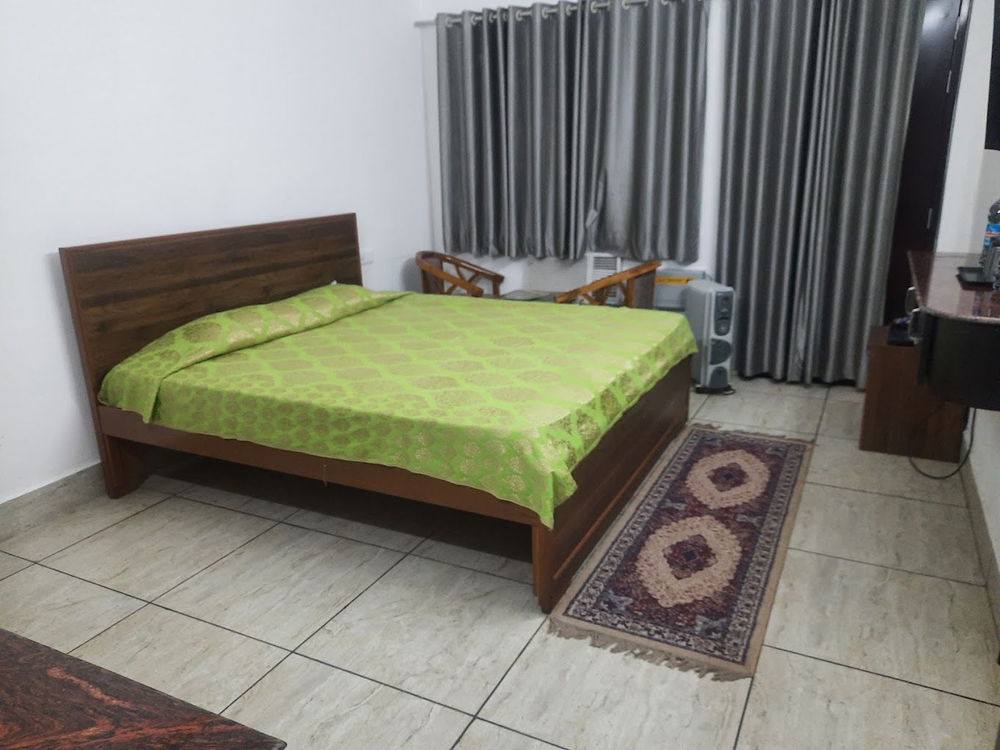
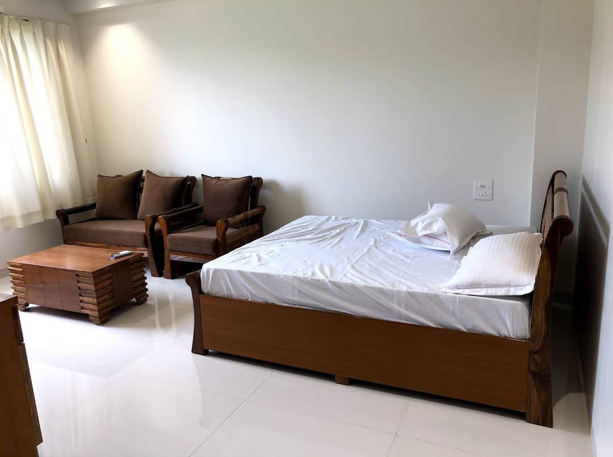
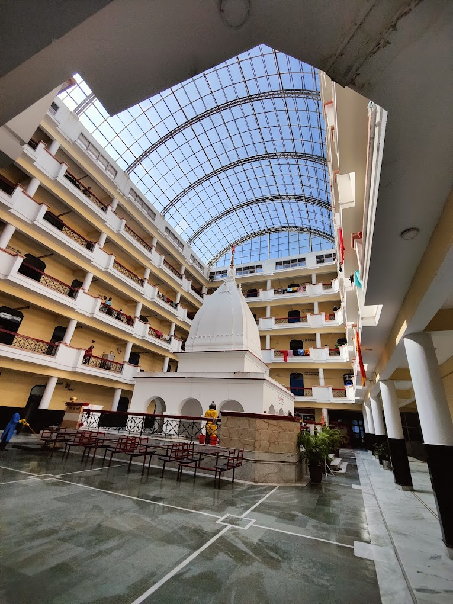

Whether you are on a pilgrimage or a short visit, Niharika Bhawan Katra offers a clean, calm, and affordable environment. Our rooms are designed for maximum comfort, ensuring you rest well before or after your trek to the Bhawan.
Thousands of devotees prefer Niharika Bhawan Katra room booking each year because of its prime location, courteous service, and hassle-free facilities.
At Niharika Bhawan Katra, you get more than just a room — you get comfort, safety, and convenience. The hotel is designed to provide guests with everything needed for a restful stay before or after their temple visit.
Apart from this, the hotel also assists guests with Yatra Parchi arrangements and provides basic guidance for Mata Vaishno Devi room booking. These small details make Niharika Bhawan Katra one of the best hotels in Katra Jammu for pilgrims.
Choosing the right stay during your Vaishno Devi trip is essential, especially when travelling with family, elderly members, or kids. At Niharika Bhawan Katra, we offer a safe, clean, and peaceful atmosphere that helps you rest and recharge before or after your trek to the Bhawan.
We offer a wide range of room options to suit your needs and budget, as well as helpful staff and reliable service that makes your stay smooth and worry-free.
Whether you're looking for affordable rooms or luxurious comfort, Niharika Bhawan Katra room booking gives you options for every type of traveller.
We will contact you shortly.
Traveling to Mata Vaishno Devi can be tiring, especially during peak seasons. To make the journey easier, we assist pilgrims with helicopter and ropeway bookings so they can reach comfortably and without unnecessary stress. These services are especially helpful for senior citizens, families, and devotees who want to save time or avoid long walking routes.
You can choose from several categories of rooms depending on your budget and preferences. Every room type is equipped with clean bedding, attached bathrooms, 24-hour water supply, and all basic amenities for a peaceful stay.
Helicopter service is the fastest way to reach Mata Vaishno Devi. It helps you avoid long queues and tiring climbs while enjoying a smooth and comfortable ride.
The ropeway offers a relaxed and scenic journey with beautiful views along the way. It is a popular choice for families and elderly pilgrims who prefer a comfortable travel option.
No matter which option you choose, we make sure the process is simple, clear, and hassle-free, so you can focus on your darshan and spiritual experience.

We believe in offering affordable pricing for all our guests. Niharika Bhawan Katra's room price depends on the room category you choose and the season of your visit. However, all our rooms are reasonably priced and of great value because of their facilities and comfort.
Typical price range (subject to change during peak seasons):
Room rates may vary depending on room category, dates, and season. For current pricing and availability, please contact us directly on phone or WhatsApp.
Final pricing and room confirmation are shared by our team at the time of enquiry.
We understand how essential convenience is, especially during travel. That's why we offer room booking both online and offline. Whether planning or looking for a last-minute stay, you can easily secure your room in just a few clicks.
Our online booking system is as follows:
By booking online, you avoid last-minute hassles and enjoy peace of mind knowing your accommodation is confirmed.

Each room at Niharika Bhawan Katra is thoughtfully furnished and maintained to create a calm and relaxing environment. Whether you are staying for one night or an extended period, the hotel ensures you experience true comfort and hospitality.
You can choose from several categories of rooms depending on your budget and preferences. Every room type is equipped with clean bedding, attached bathrooms, 24-hour water supply, and all basic amenities for a peaceful stay.

Perfect for small families or couples looking for basic comfort with air conditioning. These rooms are clean and well-ventilated and have all the essential facilities you need for a short or long stay.

Our Deluxe Rooms offer extra space and added comfort, making them ideal for travellers who want a more relaxed atmosphere without spending too much.

Designed for guests looking for comfort and style, the Super Deluxe Rooms are spacious, elegantly furnished, and perfect for families or groups who prefer modern features and a little more luxury.

For those who want the best experience, our Luxury Rooms provide top-notch comfort, plush interiors, and upgraded amenities. Enjoy a peaceful and restful stay in an environment designed to soothe your mind and body after your temple visit.
No matter which option you choose, every room provides excellent value for money — making it one of the most trusted names in hotel booking.
At Niharika Bhawan Katra, we believe that your stay should be as divine as your pilgrimage. Each guest is treated with warmth and respect, reflecting the spirit of devotion that defines Katra.
With serene surroundings, clean rooms, and caring staff, the hotel ensures that you focus only on your spiritual journey while we take care of your comfort. The combination of peaceful ambiance, affordability, and proximity to the shrine makes Niharika Bhawan Katra a top choice for anyone looking for hotels in Vaishno Devi Bhawan.
So, if you are planning your next visit to Vaishno Devi, don’t wait — book hotel in Katra online at Niharika Bhawan for a clean, secure, and peaceful stay.
Whether you are visiting Vaishno Devi alone, with family, or with friends, Niharika Bhawan Katra has rooms suited for everyone. The property is family-friendly, senior-citizen friendly, and safe for solo travelers.
No matter your purpose, you will find Niharika Bhawan Katra an ideal place to stay — clean, peaceful, and affordable. It truly feels like a home away from home for every devotee visiting Mata Vaishno Devi Temple.

Location plays a major role when choosing a hotel near Vaishno Devi Temple. Niharika Bhawan Katra enjoys a prime position near the Banganga check post, the official starting point of the Yatra. This allows you to start your spiritual journey early without wasting time on travel.
The hotel is also conveniently located near the Katra railway station, making it easy for guests arriving by train. Its peaceful surroundings ensure a calm environment while keeping you close to all essential services like food stalls, medical shops, and transport facilities.
For devotees who prefer shri mata vaishno devi room booking at bhawan, staying at Niharika Bhawan offers a perfect balance — comfort, accessibility, and spiritual peace.